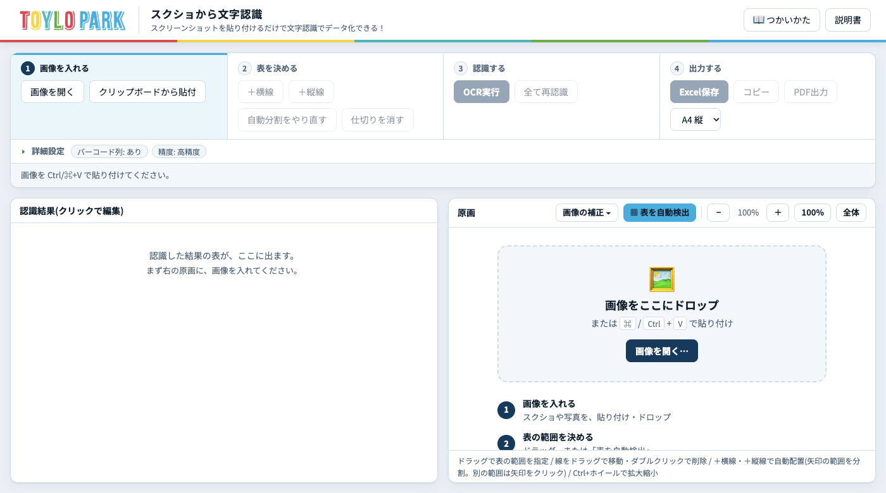
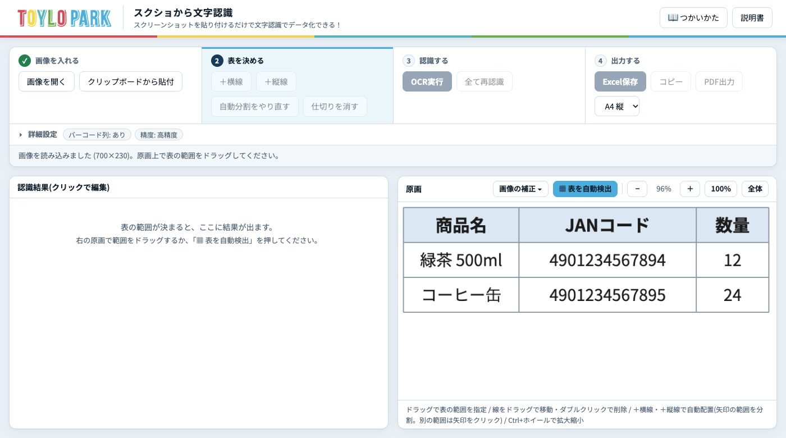
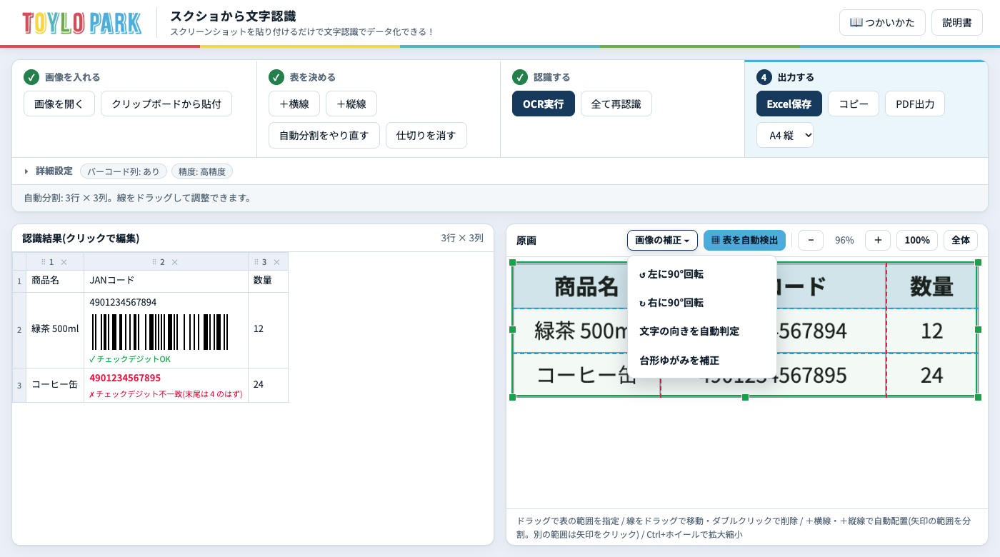
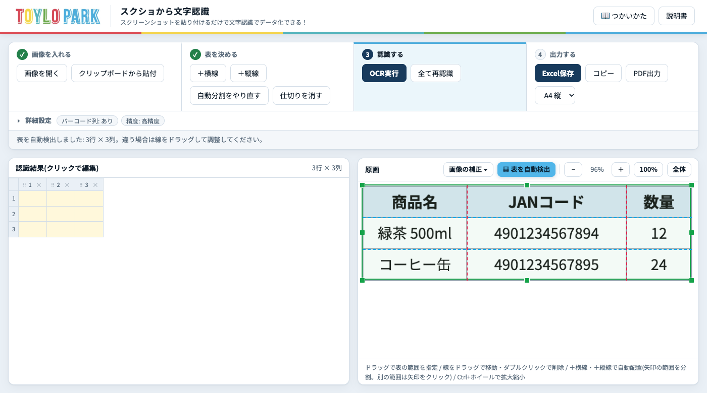
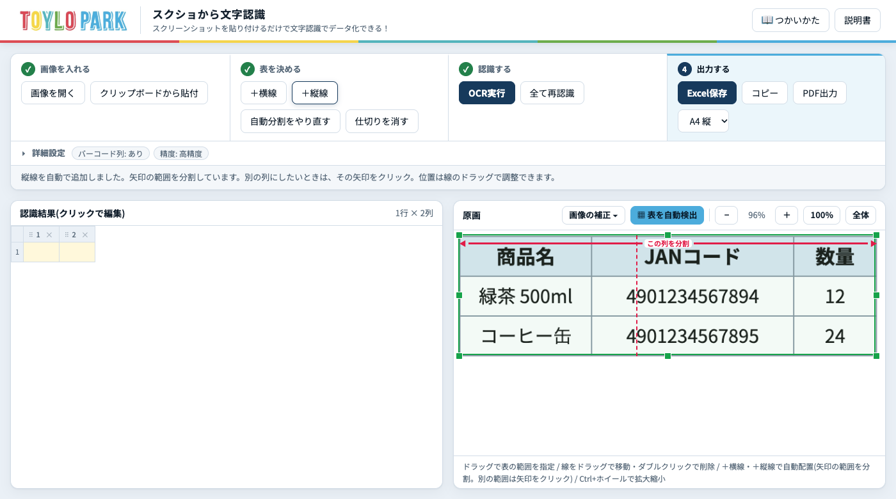
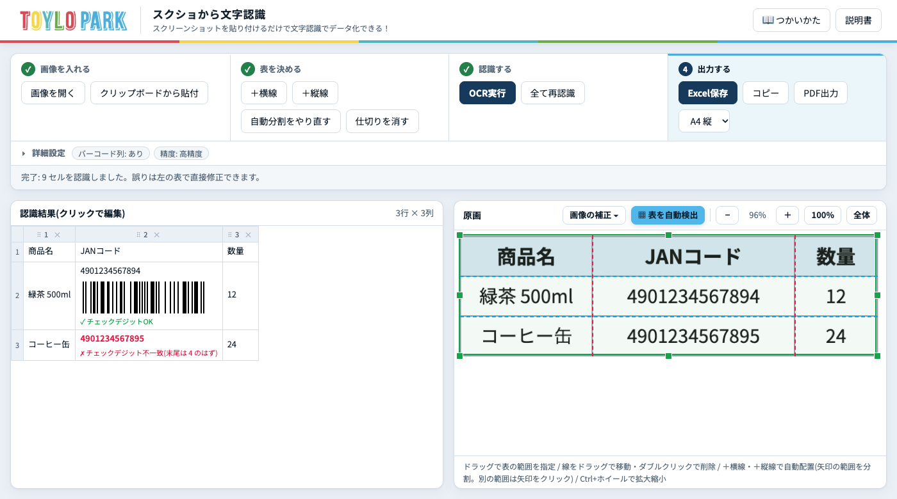
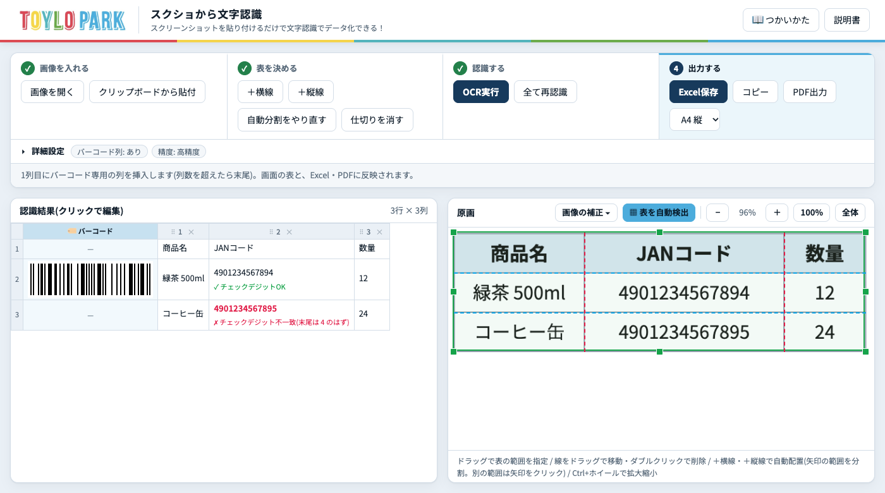
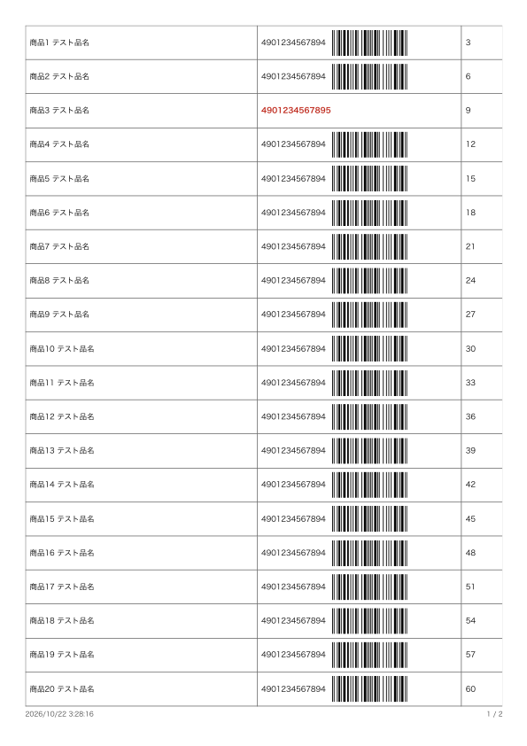

このアプリでできること
パソコンやスマホで撮った表のスクリーンショット・写真を、貼り付けるだけで、表の文字を自動で読み取ります(これを「OCR」といいます)。読み取った表はExcelファイル(.xlsx)やPDFにできます。
- 日本語・英字・数字が混ざった表を読み取れます。
- 表の範囲と、行・列の区切りを自動で見つけます(罫線がなくても、文字の並びから区切ります)。区切りは、あとから動かして直せます。
- 斜めから撮った写真の台形のゆがみ・傾き・90°/180°/270°の向き違いを、直せます。
- JANコード(13桁・8桁のバーコードの数字)が入っていたら、正しい番号かを自動で確認し、バーコードを表示します。バーコードだけの列を、好きな位置に入れることもできます。
- 読み取った結果の列を消す・順番を入れ替えることが、画面上でできます。
はじめる前に
- ブラウザは Google Chrome(パソコン)がおすすめです。
- インターネットにつないでください。
- ブラウザの中で読み取る場合、初めてのときだけ、日本語データ(十数MB)を取得するため、数十秒〜1分ほどかかることがあります。2回目からは速くなります。
- 「Corkboard Shareから開く」使い方なら、Macの文字認識を使うので、待ち時間なしで読み取れます。
画面の見方
上の操作部分は、作業の順番どおりに4つの段階に分かれています。いま行う段階は青く強調され、終わった段階には✓が付きます。
| ① 画像を入れる | 画像を開く / クリップボードから貼付 |
|---|---|
| ② 表を決める | 仕切り線の追加・やり直し・消去(表の範囲は、原画で指定するか「表を自動検出」で決めます) |
| ③ 認識する | OCR実行 / 全て再認識 |
| ④ 出力する | Excel保存 / コピー / PDF出力 / 用紙の向き |

詳細設定(「▸ 詳細設定」を押すと開きます)には、普段は触らない設定がまとめてあります。閉じているときも、「バーコード列: あり」「精度: 高精度」のように、いまの状態が表示されます。
- 出力: 空の行・列を除く / 数字は数値で保存
- バーコード列: あり・なしの切り替えと、バーコード列を入れる位置
- 表の分割: 行間・列間の最小幅(スライダー)
- 認識: 範囲を決めたら自動でOCR / 精度
1画像を入れる
まず、読み取りたい表を画面に出して、スクリーンショットを撮ります。ファイルとして保存せず、クリップボードにコピーすると、そのまま貼り付けられて便利です。
| Mac | ⌘ + Control + Shift + 4 を押し、表の範囲をドラッグ(クリップボードにコピーされます) |
|---|---|
| Windows | Windows + Shift + S を押し、表の範囲をドラッグ |
次に、このアプリの画面を開いて、Ctrl(Macは ⌘)+ V を押します。右側の「原画」に画像が表示されます。

画像の向き・ゆがみを直す(必要なときだけ)
スマホで撮った写真が、横向きだったり、斜めから撮って台形にゆがんでいたりすると、表をうまく区切れません。原画の上の 画像の補正 ▾ を押すと、次のメニューが開きます。

| ↺ 左に90°回転 / ↻ 右に90°回転 | 画像が横向き・逆さまのときに、手で回します。(逆さまは、2回押します。) |
|---|---|
| 文字の向きを自動判定 | 文字の向きを調べて、正しい向きに自動で直します。90°・180°・270°のどれでも直せます。 |
| 台形ゆがみを補正 | 斜めから撮った紙の、台形のゆがみを正面に直します。紙の四隅が写っている必要があります。 |
この3つは、Corkboard Shareから開いた画像では、自動で行われます。
2表を決める
表の範囲は、次のどちらかで決めます。
- 自動: 原画の上の ▦ 表を自動検出 を押します。表の範囲と、行・列の区切りを、自動で見つけます。
- 手で囲む: 右側の原画で、表の範囲をマウスでドラッグして囲みます。表の全体がぴったり入らなくても大丈夫です。余白は自動で詰められます。
決めた直後に、行と列の仕切り線が自動で入ります。水色の点線が「行の区切り」、赤の点線が「列の区切り」です。左の「認識結果」にも、同じ行数・列数の表ができます。

「範囲を決めたら自動でOCR」にチェックが入っていれば(初期設定)、手で囲んだ直後に、自動で読み取りが始まります。
3仕切り線を直す(必要なときだけ)
自動の区切りが違っていたら、次の方法で直します。
| 線を動かす | 線の上にマウスを置いて、そのままドラッグします。 |
|---|---|
| 線を消す | 線をダブルクリックします。 |
| 線を足す | ＋横線 または ＋縦線 を押します。線は自動で入ります(次の説明を見てください)。 |
| 枠の大きさを変える | 緑の枠の四角い取っ手をドラッグします。 |
| やり直す | 自動分割をやり直す で、もう一度自動で区切ります。仕切りを消す で、すべての線を消せます。 |
線の自動配置と、矢印
＋横線・＋縦線を押すと、いちばん広い列(行)の、文字のない隙間に、線が自動で入ります。どの範囲を分けているかが分かるように、画像の上(縦線)・左(横線)に矢印が出ます。
- 濃い矢印と「この列を分割」の表示が、いま線が分けている範囲です。
- 別の列(行)に変えたいときは、その範囲の薄い矢印をクリックします。線が、その範囲の隙間に移ります。
- 位置の微調整は、線をドラッグします。
- 続けて押すと、次に広い範囲に線が入ります。矢印は、画像の別の場所をクリックするか Esc を押すと消えます。
- 縦線は、表の全部の行にまたがって入ります。

自動の区切りが合わないとき(スライダー)
「詳細設定」の「表の分割」にあります。スライダーを動かすと、自動で区切り直されます。
- 行間の最小幅: 小さくすると、行が細かく分かれます。大きくすると、分かれにくくなります。
- 列間の最小幅: 小さくすると、列が細かく分かれます。文字の間で列が割れてしまうときは、大きくします。
4文字を読み取って、結果を確認する
「範囲を決めたら自動でOCR」にチェックが入っていれば、自動で読み取りが始まります(外した場合は OCR実行 を押します)。画面上部に進み具合が出ます。

- 読み間違いは、左の表のマス目をクリックして、そのまま書き直せます。
- 左のマスにカーソルを置くと、原画の対応する場所が青く光ります。見比べながら直せます。
- 仕切り線を動かしたあと、黄色いマスは「まだ読み取っていない」マスです。OCR実行 で、黄色いマスだけ読み取ります。
- 全て再認識 は、すべてのマスを読み直します。手で直した内容も上書きされるので注意してください。
- 半角の数字(0〜9)は、丸数字(①②など)に誤って読まれないようにしてあります。
精度(詳細設定)
- 高精度: 時間がかかりますが、読み間違いが少なくなります。(初回は、日本語データの取得に時間がかかります。)
- 標準: 速いですが、精度は下がります。
- Macの文字認識: Corkboard Shareから開いたときだけ、選択肢に出ます。いちばん正確で、速いです。(くわしくは、こちら)
5認識結果の列を整える(消す・並べ替える)
左の「認識結果」の列見出しで、いらない列を消したり、列の順番を入れ替えたりできます。ここでの変更は、Excel・PDF・コピーにも、そのまま反映されます。
| 列を消す | 列見出しの ✕ を押します。消した列は、斜線の細い帯になります。読み取った内容を捨てているわけではないので、戻せます。 |
|---|---|
| 消した列を戻す | 斜線の帯の ＋ を押します。まとめて戻すなら、表の左上の「全部戻す」を押します。 |
| 列を並べ替える | 列見出しを、ドラッグして入れたい位置へ動かします。入れる位置に、青い線が出ます。(スマホやタブレットでは、見出しの「⠿」の部分を押したまま動かします。) |
| 並びを戻す | 並べ替えたあと、表の左上に出る「並びを戻す」を押します。 |

6JANコードの確認とバーコード
マスの中に13桁(または8桁)のJANコードがあると、自動でチェックデジット(末尾の検算用の数字)を計算して、正しいかを確認します。
| 正しいとき | マスの中にバーコードと「✓ チェックデジットOK」が表示されます。 |
|---|---|
| 間違っているとき | 番号が赤字になり、「✗ チェックデジット不一致(末尾は ○ のはず)」と表示されます。読み間違いか、元の番号の誤りです。原画と見比べて直してください。 |
番号を直すと、その場でもう一度確認されます。正しくなれば赤字が消えて、バーコードが出ます。
バーコード列「あり」「なし」(詳細設定)
- あり(初期設定): JANコードにバーコードと、チェックデジットの確認を付けます。
- なし: JANコードも、ふつうの文字・数字として扱います。バーコードも確認も出ません。電話番号や管理番号で、赤字が出て困るときに使います。(12桁以上の数字は、Excelでも文字のまま保存されます。)
バーコード専用の列を入れる
詳細設定の「[ ]列目に挿入」に数字を入れると、その位置に「🏷 バーコード」の列が入ります。入力した瞬間に、左の表にも反映されるので、位置を見ながら決められます。
- Excel・PDFにも、同じ位置にバーコードの列が入ります。このとき、数字のマスには、バーコードを付けません。
- 数える位置は、消した列を除いた列の順番です。列数より大きい数字を入れると、いちばん右に入ります。
- 1行に複数のJANコードがあるときは、最初の正しいコードのバーコードを入れます。
- 空欄にすると、今までどおり、数字と同じマスにバーコードが出ます。
7Excelで保存する
Excel保存 を押すと、Excelファイル(.xlsx)がダウンロードされます。ダブルクリックすれば、そのままExcelで開けます。
- 左の表で整えた列の消去・並びが、そのまま反映されます。
- 列の幅は、中身に合わせて自動で整います。表には、罫線が付きます。
- 正しいJANコードの行には、バーコードの画像も入ります。間違っているJANコードは、赤字で保存されます。
- 「数字は数値で保存」にチェックがあると、「1,280」や「98.5」などは、計算できる数値として保存されます。先頭が0の番号(例: 007)、JANコード、型番は、文字のまま保存されます。
- 「空の行・列を除く」にチェックを入れると、何も書かれていない行や列を省きます。
- コピー を押すと、表をコピーできます。すでに開いているExcelやGoogleスプレッドシートに、貼り付けるだけです。(バーコードの画像は、コピーには入りません。)
8PDFで保存・印刷する
PDF出力 を押すと、印刷の画面が開きます。A4用紙に、1ページ20行ずつ並べます。21行目からは、次のページになります。
- 横の A4 縦 / A4 横 で、用紙の向きを選びます。
- PDF出力 を押します。
- 印刷の画面で、送信先を「PDFに保存」にして保存します。紙に印刷する場合は、プリンターを選びます。
- 設定の「倍率」は100%(または「デフォルト」)、「余白」はデフォルトにします。(倍率を変えると、1ページ20行にならないことがあります。)
正しいJANコードの行には、番号のとなりにバーコードが付きます。間違っているコードは赤字になります。列の消去・並び・バーコード専用列も、反映されます。

Corkboard Shareから開く(自動で処理されます)
スマホで撮った写真を、Corkboard Shareの画像付箋にしてあれば、付箋の 🔍 文字認識で開く を押すだけで、このアプリが開き、次の処理が自動で順番に行われます。
- 台形ゆがみの補正(斜めから撮った紙を、正面に直します)
- 色調の補正(影や明るさのムラを平らにし、文字をはっきりさせます)
- 文字の向きの補正(90°/180°/270°の向き違いを直します)
- 傾きの補正(残った小さな傾きを直します)
- 表の範囲と、行・列の区切りの自動検出
- 文字の読み取り(「範囲を決めたら自動でOCR」にチェックがあるとき)
画面上部のメッセージに、「台形のゆがみを補正しました。」「向きを 270° 回転して直しました。」のように、行った補正が出ます。結果を見て、区切りが合わなければ、前の項目の方法で直してください。
Macの文字認識を使います
この開き方のときは、精度の選択肢に「Macの文字認識(最高精度・Corkboard経由)」が出て、自動で選ばれます。Macに備わっている日本語の文字認識で、ブラウザの中で読むよりも、正確で速く(数秒)読み取れます。画像は、あなたのMacの外には出ません。
ボタンの一覧
| ボタン | はたらき |
|---|---|
| 画像を開く | パソコンの中の画像ファイルを読み込みます。 |
| クリップボードから貼付 | コピーした画像を貼り付けます。(Ctrl/⌘+V でも貼り付けられます。) |
| ＋横線 / ＋縦線 | 仕切り線を、自動で足します。矢印の範囲を分割します。 |
| 自動分割をやり直す | 仕切り線を、自動でもう一度入れ直します。 |
| 仕切りを消す | すべての仕切り線を消します。 |
| OCR実行 | まだ読み取っていないマスを読み取ります。 |
| 全て再認識 | すべてのマスを読み直します。(手で直した内容も消えます。) |
| Excel保存 / コピー | 表をExcelファイル(.xlsx)で保存します / 表をコピーします。 |
| PDF出力 | A4・1ページ20行のPDFを作ります。 |
| A4 縦 / A4 横 | PDFの用紙の向きを選びます。 |
| 画像の補正 ▾ | 回転・文字の向きの自動判定・台形ゆがみの補正のメニューを開きます。 |
| ▦ 表を自動検出 | 表の範囲と、行・列の区切りを、自動で決めます。 |
| 列見出しの ✕ / ＋ | 列を消す / 消した列を戻します。 |
| 全部戻す / 並びを戻す | 消した列や、列の並びを、元に戻します。 |
| 詳細設定 | 出力・バーコード列・表の分割・認識(精度など)の設定を開きます。 |
こんなときは
- 画像を貼り付けても何も起きません
- 画面のどこかをクリックしてから、もう一度 Ctrl/⌘+V を押してください。それでもだめなら、画像を開く からファイルを選んでください。
- 写真が横向き・逆さまです
- 「画像の補正 ▾」から「文字の向きを自動判定」を押してください。直らなければ、↺ ↻ で手で回します。
- 斜めから撮った写真で、表がうまく区切れません
- 「画像の補正 ▾」の「台形ゆがみを補正」を押してから、「▦ 表を自動検出」を押してください。紙の四隅が写っていると、うまくいきます。(四隅が写真からはみ出していると、補正できません。そのときは、撮り直してください。)
- 「表を自動検出」で、表以外の文字まで入ってしまいます
- 緑の枠の取っ手をドラッグして、表だけに合わせてください。罫線で囲まれた表は、その枠だけを自動で選びます。
- 読み取りが始まらない・とても遅い
- 初回は日本語データの取得に時間がかかります。進み具合の表示が出ていれば、そのままお待ちください。インターネットにつながっているかも確認してください。
- 「Macの文字認識に接続できません」と出ました
- Macがスリープ中などです。心配はいりません。自動で、ブラウザの中の文字認識に切り替わって、最後まで読み取ります。(少し時間がかかります。)
- 1つのマスに、本当は別々の文字が入ってしまう
- 列の線が足りていません。＋縦線 で線を足すか、「列間の最小幅」を小さくしてください。
- 本当は1つのマスなのに、途中で割れている
- 線をダブルクリックして消すか、「列間の最小幅」「行間の最小幅」を大きくしてください。
- 列を間違って消してしまいました / 並べ替えを取り消したい
- 斜線の帯の「＋」か、表の左上の「全部戻す」「並びを戻す」を押してください。
- 列を消したり並べ替えたりしたのに、元に戻ってしまいました
- 仕切り線を足したり消したりして、列の数が変わると、元に戻ります。先に仕切り線を整えてから、列を整えてください。
- 電話番号なのに、赤字になってしまう
- 13桁の数字は、JANコードとして確認されます。詳細設定の「バーコード列」を「なし」にすると、ふつうの数字として扱います。
- 小さい文字や、薄い文字が読めない
- 元の画面を拡大してから、スクリーンショットを撮り直してください。大きく写すほど、よく読み取れます。「精度」は「高精度」にします。
- ボタンが押せない(灰色)
- 先に、表の範囲を決めてください(「▦ 表を自動検出」か、原画をドラッグ)。決めると、使えるようになります。
- PDFが1ページ20行にならない
- 印刷画面の「倍率」を100%にして、「余白」をデフォルトにしてください。